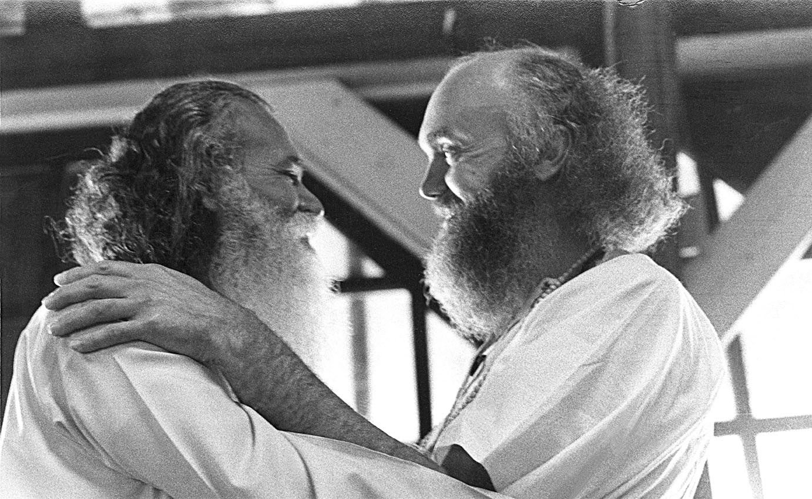

A Journey of Spiritual Awakening
Baba Ram Dass, born Richard Alpert, was an influential spiritual teacher and author known for his teachings on spirituality, mindfulness, and the power of love.
Early Life and Transformation
The Spiritual Odyssey
Baba Ram Dass, originally Richard Alpert, was born on April 6, 1931, in Boston, Massachusetts. His early life showcased intellectual brilliance as he pursued higher education at Tufts University and obtained a Ph.D. in psychology from Stanford University. Alpert later became a distinguished psychology professor at Harvard University, known for his academic prowess.
In the 1960s, Alpert's journey took an unconventional turn as he collaborated with Timothy Leary in the Harvard Psilocybin Project, exploring the effects of psychedelic substances on human consciousness. This research, though controversial, sparked interest for its potential implications on spiritual and psychological exploration.
Alpert's quest for a deeper understanding of spirituality led him to experiment with psychedelic substances, but the search for sustainable insights propelled him to India in 1967. There, he encountered Neem Karoli Baba, a revered Hindu guru, whose teachings on love, devotion, and interconnectedness sparked Alpert's spiritual awakening. Renouncing his former identity, Alpert embraced the name Baba Ram Dass, signifying his transformation into a "Servant of God."
Impact and Legacy
Returning to the West with a shifted consciousness, Baba Ram Dass became a central figure in the 1960s and 1970s counterculture. Through lectures and books, he inspired individuals on unique paths towards awakening, bridging Eastern and Western spiritual traditions.
His enduring impact lies in uniting diverse spiritual perspectives. Baba Ram Dass's lectures and writings sparked a transformative movement, inspiring a collective journey towards a deeper understanding of life's meaning and purpose. His legacy encourages individuals to explore consciousness and embrace a profound connection with the divine.
A Handbook for Spiritual Revolution
Be Here Now
In 1971, Baba Ram Dass published the iconic book "Be Here Now," a spiritual classic that resonated with a generation seeking deeper meaning. The book encapsulated his teachings, encouraging readers to live in the present moment, embrace love, and explore the interconnectedness of all beings.
Be Here Now
remains a timeless guide for those on a quest for spiritual growth, self-discovery, and a more conscious way of living. Its enduring relevance lies in its ability to transcend cultural and temporal boundaries, offering timeless wisdom to readers across generations.